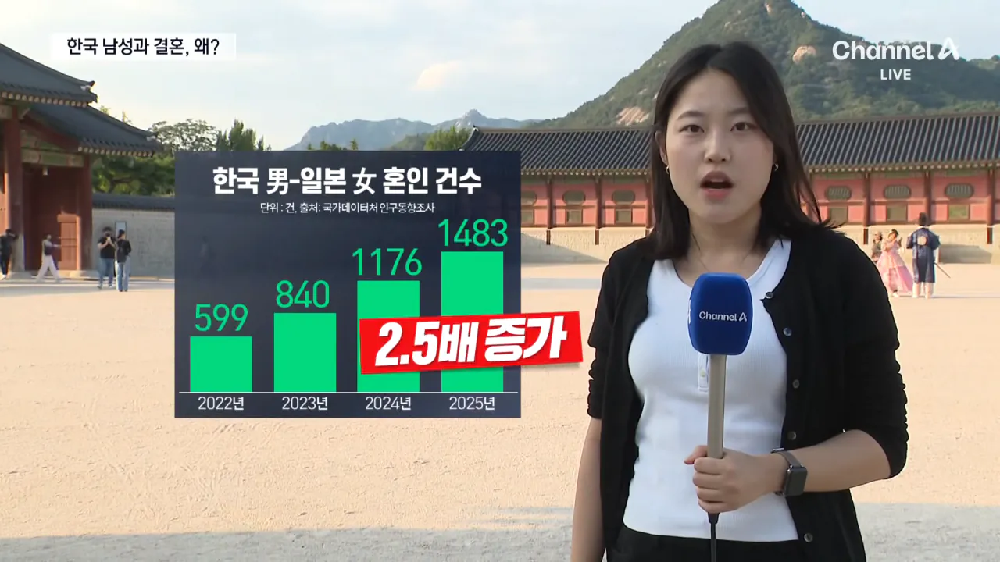
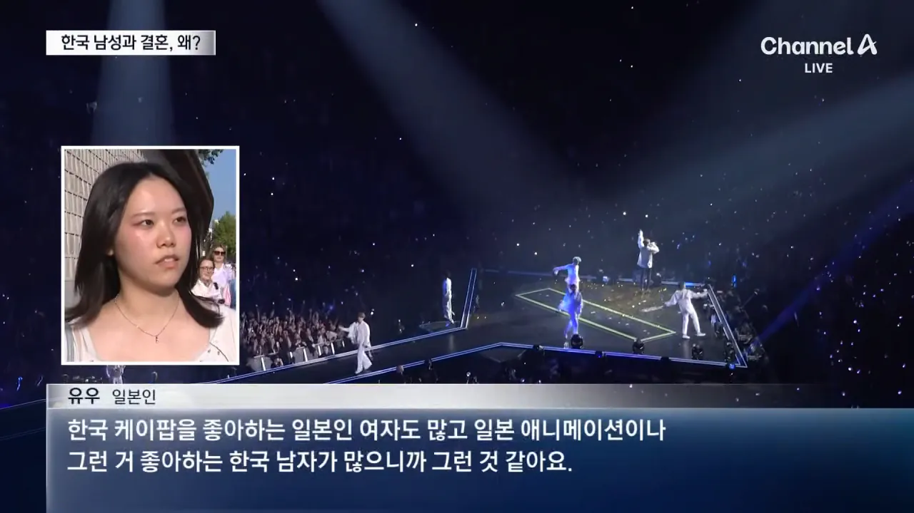
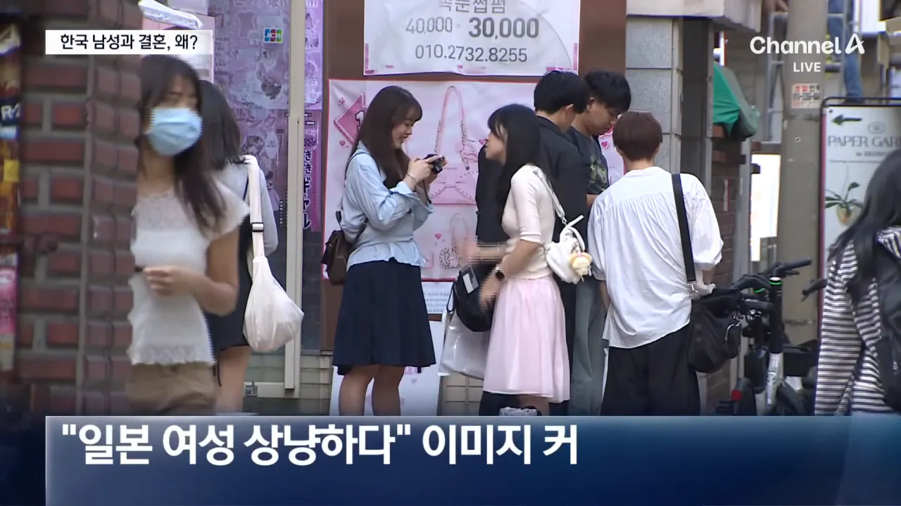

3년 동안 2.5배 증가 ㄷㄷㄷ



3년 동안 2.5배 증가 ㄷㄷㄷ
남남북녀라니까
일본남 한국녀도 남남북녀겠지
일본야동을 많이봐서 일본여자가좋은거는아닐런지..??
뭘 모르는데 일녀들은 지들이 원하던 잘생긴 와꾸+큰키+다정한한남 만나서 상냥한거다
관리가 잘 되어 있으면 어느나라 계집을 만나도 존나 꼬시기 쉽고 일녀처럼 상냥해짐
근데 관리 놓아버리면 어느나라 계집을 만나도 도망가거나 표독해짐 이거 ㄹㅇㄹㅇ
잘생무적 ㅇㅈ하지만
표독함이 보풍당당으로 포장되는 사회랑 여자력이 덕목인 사회랑은 다를수밖에 없음
컨텐츠 찍을라고 결혼하는 애들 많겠는데 ㅎㅎㅎㅎㅎㅎㅎㅎㅎ
근데 너무 큰 환상은 갖지 마
사람 사는 건 거의 같아서